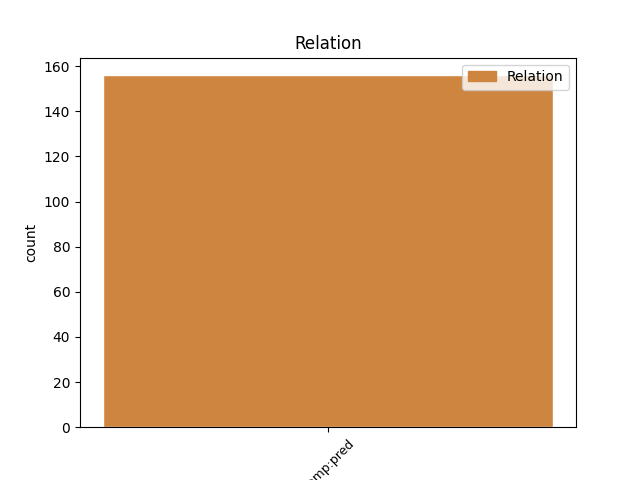
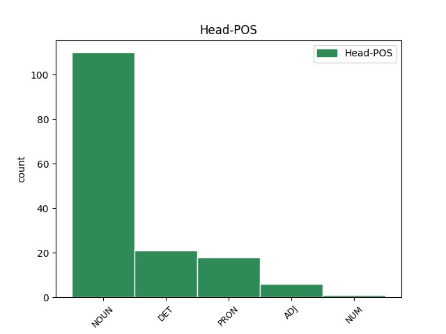
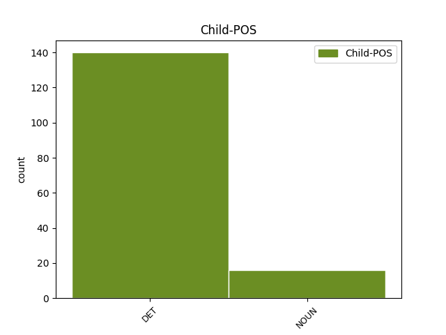

Distribution of features within this leaf



Agreement Rules sorted by frequency.
- When the dependent token is the predicative complements(comp:pred) of the head token, and the head token is NOUN and the dependent token is DET.
1 Vcelku _ _ _ _ 0 _ _ _
2 se _ _ _ _ 0 _ _ _
3 ukazuje _ _ _ _ 0 _ _ _
4 , _ _ _ _ 0 _ _ _
5 že _ _ _ _ 0 _ _ _
6 těžiště _ _ _ _ 0 _ _ _
7 prací _ _ _ _ 0 _ _ _
8 v _ _ _ _ 0 _ _ _
9 souvislosti _ _ _ _ 0 _ _ _
10 s _ _ _ _ 0 _ _ _
11 tyristorovou _ _ _ _ 0 _ _ _
12 regulací _ _ _ _ 0 _ _ _
13 lokomotiv _ _ _ _ 0 _ _ _
14 leží _ _ _ _ 0 _ _ _
15 v _ _ _ _ 0 _ _ _
16 nízkofrekvenčním _ _ _ _ 0 _ _ _
17 pásmu _ _ _ _ 0 _ _ _
18 , _ _ _ _ 0 _ _ _
19 kde _ _ _ _ 0 _ _ _
20 jsou _ _ _ _ 0 _ _ _
21 poměry _ _ _ _ 0 _ _ _
22 značně _ _ _ _ 0 _ _ _
23 komplikované _ _ _ _ 0 _ _ _
24 , _ _ _ _ 0 _ _ _
25 neboť _ _ _ _ 0 _ _ _
26 se _ _ _ _ 0 _ _ _
27 zde _ _ _ _ 0 _ _ _
28 kříží _ _ _ _ 0 _ _ _
29 hlediska _ _ _ _ 0 _ _ _
30 funkční _ _ _ _ 0 _ _ _
31 , _ _ _ _ 0 _ _ _
32 energetická _ _ _ _ 0 _ _ _
33 a _ _ _ _ 0 _ _ _
34 rušivého _ _ _ _ 0 _ _ _
35 působení _ _ _ _ 0 _ _ _
36 a _ _ _ _ 0 _ _ _
37 sám sám DET PLYS1---------- Case=Nom|Gender=Masc|Number=Sing|PronType=Emp 38 comp:pred _ LGloss=(samotný)
38 charakter charakter NOUN NNIS1-----A---- Animacy=Inan|Case=Nom|Gender=Masc|Number=Sing|Polarity=Pos 0 _ _ _
39 spektra _ _ _ _ 0 _ _ _
40 v _ _ _ _ 0 _ _ _
41 tomto _ _ _ _ 0 _ _ _
42 rozsahu _ _ _ _ 0 _ _ _
43 přechází _ _ _ _ 0 _ _ _
44 od _ _ _ _ 0 _ _ _
45 čistě _ _ _ _ 0 _ _ _
46 čárového _ _ _ _ 0 _ _ _
47 ke _ _ _ _ 0 _ _ _
48 spojitému _ _ _ _ 0 _ _ _
49 v _ _ _ _ 0 _ _ _
50 závislosti _ _ _ _ 0 _ _ _
51 na _ _ _ _ 0 _ _ _
52 stabilitě _ _ _ _ 0 _ _ _
53 provozních _ _ _ _ 0 _ _ _
54 podmínek _ _ _ _ 0 _ _ _
55 . _ _ _ _ 0 _ _ _
1 Není _ _ _ _ 0 _ _ _
2 ovšem _ _ _ _ 0 _ _ _
3 pravda _ _ _ _ 0 _ _ _
4 , _ _ _ _ 0 _ _ _
5 že _ _ _ _ 0 _ _ _
6 pracovat _ _ _ _ 0 _ _ _
7 kladivem _ _ _ _ 0 _ _ _
8 umí _ _ _ _ 0 _ _ _
9 každý každý DET AAMS1----1A---- Animacy=Anim|Case=Nom|Degree=Pos|Gender=Masc|Number=Sing|Polarity=Pos|PronType=Tot 0 _ _ _
10 sám sám DET PLYS1---------- Case=Nom|Gender=Masc|Number=Sing|PronType=Emp 9 comp:pred _ LGloss=(samotný)
11 od _ _ _ _ 0 _ _ _
12 sebe _ _ _ _ 0 _ _ _
13 , _ _ _ _ 0 _ _ _
14 dokazují _ _ _ _ 0 _ _ _
15 to _ _ _ _ 0 _ _ _
16 potlučené _ _ _ _ 0 _ _ _
17 prsty _ _ _ _ 0 _ _ _
18 . _ _ _ _ 0 _ _ _
1 Žádné _ _ _ _ 0 _ _ _
2 nadlidské _ _ _ _ 0 _ _ _
3 závaznosti _ _ _ _ 0 _ _ _
4 pro _ _ _ _ 0 _ _ _
5 lidský _ _ _ _ 0 _ _ _
6 život _ _ _ _ 0 _ _ _
7 nejsou _ _ _ _ 0 _ _ _
8 uznávány _ _ _ _ 0 _ _ _
9 , _ _ _ _ 0 _ _ _
10 člověk _ _ _ _ 0 _ _ _
11 vyzvedá _ _ _ _ 0 _ _ _
12 nárok _ _ _ _ 0 _ _ _
13 , _ _ _ _ 0 _ _ _
14 aby _ _ _ _ 0 _ _ _
15 by _ _ _ _ 0 _ _ _
16 on on PRON PPYS1--3------- Case=Nom|Gender=Masc|Number=Sing|Person=3|PronType=Prs 0 _ _ _
17 sám sám DET PLYS1---------- Case=Nom|Gender=Masc|Number=Sing|PronType=Emp 16 comp:pred _ LGloss=(samotný)
18 byl _ _ _ _ 0 _ _ _
19 základem _ _ _ _ 0 _ _ _
20 životního _ _ _ _ 0 _ _ _
21 tvaru _ _ _ _ 0 _ _ _
22 . _ _ _ _ 0 _ _ _
1 Jsou _ _ _ _ 0 _ _ _
2 to _ _ _ _ 0 _ _ _
3 komutační _ _ _ _ 0 _ _ _
4 špičky špička NOUN NNFP1-----A---- Case=Nom|Gender=Fem|Number=Plur|Polarity=Pos 7 comp:pred _ SpaceAfter=No
5 , _ _ _ _ 0 _ _ _
6 zapalovací _ _ _ _ 0 _ _ _
7 impulsy impuls NOUN NNIP1-----A---- Animacy=Inan|Case=Nom|Gender=Masc|Number=Plur|Polarity=Pos 0 _ _ _
8 , _ _ _ _ 0 _ _ _
9 jiskření _ _ _ _ 0 _ _ _
10 na _ _ _ _ 0 _ _ _
11 komutátorech _ _ _ _ 0 _ _ _
12 trakčních _ _ _ _ 0 _ _ _
13 a _ _ _ _ 0 _ _ _
14 pomocných _ _ _ _ 0 _ _ _
15 motorů _ _ _ _ 0 _ _ _
16 , _ _ _ _ 0 _ _ _
17 spínací _ _ _ _ 0 _ _ _
18 pochody _ _ _ _ 0 _ _ _
19 . _ _ _ _ 0 _ _ _
1 Než _ _ _ _ 0 _ _ _
2 se _ _ _ _ 0 _ _ _
3 lékař _ _ _ _ 0 _ _ _
4 dostaví _ _ _ _ 0 _ _ _
5 , _ _ _ _ 0 _ _ _
6 uvolníme _ _ _ _ 0 _ _ _
7 postiženému _ _ _ _ 0 _ _ _
8 šat _ _ _ _ 0 _ _ _
9 a _ _ _ _ 0 _ _ _
10 provádíme _ _ _ _ 0 _ _ _
11 umělé _ _ _ _ 0 _ _ _
12 dýchání _ _ _ _ 0 _ _ _
13 a _ _ _ _ 0 _ _ _
14 to _ _ _ _ 0 _ _ _
15 nepřerušovaně _ _ _ _ 0 _ _ _
16 tak _ _ _ _ 0 _ _ _
17 dlouho _ _ _ _ 0 _ _ _
18 , _ _ _ _ 0 _ _ _
19 dokud _ _ _ _ 0 _ _ _
20 lékař _ _ _ _ 0 _ _ _
21 nepřijde _ _ _ _ 0 _ _ _
22 nebo _ _ _ _ 0 _ _ _
23 dokud _ _ _ _ 0 _ _ _
24 raněný raněný ADJ AAMS1----1A---- Animacy=Anim|Case=Nom|Degree=Pos|Gender=Masc|Number=Sing|Polarity=Pos 0 _ _ _
25 nepočne _ _ _ _ 0 _ _ _
26 dýchat _ _ _ _ 0 _ _ _
27 sám sám DET PLYS1---------- Case=Nom|Gender=Masc|Number=Sing|PronType=Emp 24 comp:pred _ LGloss=(samotný)|SpaceAfter=No
28 . _ _ _ _ 0 _ _ _
1 Ty _ _ _ _ 0 _ _ _
2 byly _ _ _ _ 0 _ _ _
3 ale _ _ _ _ 0 _ _ _
4 pro _ _ _ _ 0 _ _ _
5 nás já PRON PP-P4--1------- Case=Acc|Number=Plur|Person=1|PronType=Prs 0 _ _ _
6 kluky kluk NOUN NNMP4-----A---- Animacy=Anim|Case=Acc|Gender=Masc|Number=Plur|Polarity=Pos 5 comp:pred _ _
7 tabu _ _ _ _ 0 _ _ _
8 . _ _ _ _ 0 _ _ _
1 K _ _ _ _ 0 _ _ _
2 pocitu _ _ _ _ 0 _ _ _
3 plného _ _ _ _ 0 _ _ _
4 , _ _ _ _ 0 _ _ _
5 bohatého _ _ _ _ 0 _ _ _
6 , _ _ _ _ 0 _ _ _
7 šťastného _ _ _ _ 0 _ _ _
8 života _ _ _ _ 0 _ _ _
9 jsou _ _ _ _ 0 _ _ _
10 hmotné _ _ _ _ 0 _ _ _
11 podmínky _ _ _ _ 0 _ _ _
12 teprve _ _ _ _ 0 _ _ _
13 určitým _ _ _ _ 0 _ _ _
14 východiskem východisko NOUN NNNS7-----A---- Case=Ins|Gender=Neut|Number=Sing|Polarity=Pos 16 comp:pred _ SpaceAfter=No
15 , _ _ _ _ 0 _ _ _
16 jedním jeden NUM ClZS7---------- Case=Ins|Gender=Masc,Neut|Number=Sing|NumForm=Word|NumType=Card|NumValue=1,2,3 0 _ _ _
17 z _ _ _ _ 0 _ _ _
18 předpokladů _ _ _ _ 0 _ _ _
19 a _ _ _ _ 0 _ _ _
20 po _ _ _ _ 0 _ _ _
21 dosažení _ _ _ _ 0 _ _ _
22 určitého _ _ _ _ 0 _ _ _
23 jejich _ _ _ _ 0 _ _ _
24 stupně _ _ _ _ 0 _ _ _
25 musejí _ _ _ _ 0 _ _ _
26 ztrácet _ _ _ _ 0 _ _ _
27 na _ _ _ _ 0 _ _ _
28 významu _ _ _ _ 0 _ _ _
29 . _ _ _ _ 0 _ _ _
Disagree Examples:
1 Ač _ _ _ _ 0 _ _ _
2 byl _ _ _ _ 0 _ _ _
3 sám sám DET PLYS1---------- Case=Nom|Gender=Masc|Number=Sing|PronType=Emp 5 comp:pred _ LGloss=(samotný)
4 prvním _ _ _ _ 0 _ _ _
5 mužem muž NOUN NNMS7-----A---- Animacy=Anim|Case=Ins|Gender=Masc|Number=Sing|Polarity=Pos 0 _ _ _
6 v _ _ _ _ 0 _ _ _
7 obci _ _ _ _ 0 _ _ _
8 , _ _ _ _ 0 _ _ _
9 dobrovolně _ _ _ _ 0 _ _ _
10 se _ _ _ _ 0 _ _ _
11 chopil _ _ _ _ 0 _ _ _
12 péra _ _ _ _ 0 _ _ _
13 a _ _ _ _ 0 _ _ _
14 jako _ _ _ _ 0 _ _ _
15 prostý _ _ _ _ 0 _ _ _
16 písař _ _ _ _ 0 _ _ _
17 zaznamenával _ _ _ _ 0 _ _ _
18 podle _ _ _ _ 0 _ _ _
19 pravdy _ _ _ _ 0 _ _ _
20 , _ _ _ _ 0 _ _ _
21 která _ _ _ _ 0 _ _ _
22 na _ _ _ _ 0 _ _ _
23 něj _ _ _ _ 0 _ _ _
24 až _ _ _ _ 0 _ _ _
25 příliš _ _ _ _ 0 _ _ _
26 krutě _ _ _ _ 0 _ _ _
27 doléhala _ _ _ _ 0 _ _ _
28 , _ _ _ _ 0 _ _ _
29 ničivá _ _ _ _ 0 _ _ _
30 tažení _ _ _ _ 0 _ _ _
31 vojsk _ _ _ _ 0 _ _ _
32 , _ _ _ _ 0 _ _ _
33 pobíjení _ _ _ _ 0 _ _ _
34 a _ _ _ _ 0 _ _ _
35 mučení _ _ _ _ 0 _ _ _
36 čelákovických _ _ _ _ 0 _ _ _
37 sousedů _ _ _ _ 0 _ _ _
38 i _ _ _ _ 0 _ _ _
39 všechna _ _ _ _ 0 _ _ _
40 jiná _ _ _ _ 0 _ _ _
41 utrpení _ _ _ _ 0 _ _ _
42 , _ _ _ _ 0 _ _ _
43 která _ _ _ _ 0 _ _ _
44 jeho _ _ _ _ 0 _ _ _
45 milované _ _ _ _ 0 _ _ _
46 město _ _ _ _ 0 _ _ _
47 nelítostně _ _ _ _ 0 _ _ _
48 ničila _ _ _ _ 0 _ _ _
49 . _ _ _ _ 0 _ _ _
1 A _ _ _ _ 0 _ _ _
2 přitom _ _ _ _ 0 _ _ _
3 každý každý DET AAMS1----1A---- Animacy=Anim|Case=Nom|Degree=Pos|Gender=Masc|Number=Sing|Polarity=Pos|PronType=Tot 0 _ _ _
4 vidí _ _ _ _ 0 _ _ _
5 především _ _ _ _ 0 _ _ _
6 sám sám DET PLIS4---------- Animacy=Inan|Case=Acc|Gender=Masc|Number=Sing|PronType=Emp 3 comp:pred _ LGloss=(samotný)
7 sebe _ _ _ _ 0 _ _ _
8 , _ _ _ _ 0 _ _ _
9 košile _ _ _ _ 0 _ _ _
10 je _ _ _ _ 0 _ _ _
11 mu _ _ _ _ 0 _ _ _
12 bližší _ _ _ _ 0 _ _ _
13 než _ _ _ _ 0 _ _ _
14 kabát _ _ _ _ 0 _ _ _
15 , _ _ _ _ 0 _ _ _
16 argumentoval _ _ _ _ 0 _ _ _
17 . _ _ _ _ 0 _ _ _
1 Každá _ _ _ _ 0 _ _ _
2 základní _ _ _ _ 0 _ _ _
3 organizace _ _ _ _ 0 _ _ _
4 by _ _ _ _ 0 _ _ _
5 měla _ _ _ _ 0 _ _ _
6 mít _ _ _ _ 0 _ _ _
7 ve _ _ _ _ 0 _ _ _
8 svém _ _ _ _ 0 _ _ _
9 plánu _ _ _ _ 0 _ _ _
10 práce _ _ _ _ 0 _ _ _
11 zakotven _ _ _ _ 0 _ _ _
12 plán plán NOUN NNIS4-----A---- Animacy=Inan|Case=Acc|Gender=Masc|Number=Sing|Polarity=Pos 0 _ _ _
13 přijímání přijímání NOUN NNNS2-----A---- Case=Gen|Gender=Neut|Number=Sing|Polarity=Pos 12 comp:pred _ LDeriv=přijímat
14 nových _ _ _ _ 0 _ _ _
15 mladých _ _ _ _ 0 _ _ _
16 členů _ _ _ _ 0 _ _ _
17 . _ _ _ _ 0 _ _ _
1 Zabsolutňování _ _ _ _ 0 _ _ _
2 endogenní _ _ _ _ 0 _ _ _
3 složky _ _ _ _ 0 _ _ _
4 , _ _ _ _ 0 _ _ _
5 přeceňování _ _ _ _ 0 _ _ _
6 genotypického _ _ _ _ 0 _ _ _
7 činitele _ _ _ _ 0 _ _ _
8 v _ _ _ _ 0 _ _ _
9 pedagogickém _ _ _ _ 0 _ _ _
10 procesu _ _ _ _ 0 _ _ _
11 , _ _ _ _ 0 _ _ _
12 se _ _ _ _ 0 _ _ _
13 projevilo _ _ _ _ 0 _ _ _
14 v _ _ _ _ 0 _ _ _
15 minulosti _ _ _ _ 0 _ _ _
16 v _ _ _ _ 0 _ _ _
17 pedagogických _ _ _ _ 0 _ _ _
18 teoriích _ _ _ _ 0 _ _ _
19 hypotézami _ _ _ _ 0 _ _ _
20 autogeneze _ _ _ _ 0 _ _ _
21 a _ _ _ _ 0 _ _ _
22 nativismu _ _ _ _ 0 _ _ _
23 , _ _ _ _ 0 _ _ _
24 podle _ _ _ _ 0 _ _ _
25 nichž _ _ _ _ 0 _ _ _
26 se _ _ _ _ 0 _ _ _
27 člověk člověk NOUN NNMS1-----A---- Animacy=Anim|Case=Nom|Gender=Masc|Number=Sing|Polarity=Pos 0 _ _ _
28 už _ _ _ _ 0 _ _ _
29 rodí _ _ _ _ 0 _ _ _
30 básníkem básník NOUN NNMS7-----A---- Animacy=Anim|Case=Ins|Gender=Masc|Number=Sing|Polarity=Pos 27 comp:pred _ SpaceAfter=No
31 , _ _ _ _ 0 _ _ _
32 řečníkem _ _ _ _ 0 _ _ _
33 , _ _ _ _ 0 _ _ _
34 matematikem _ _ _ _ 0 _ _ _
35 , _ _ _ _ 0 _ _ _
36 ale _ _ _ _ 0 _ _ _
37 také _ _ _ _ 0 _ _ _
38 zločincem _ _ _ _ 0 _ _ _
39 . _ _ _ _ 0 _ _ _
1 Stává _ _ _ _ 0 _ _ _
2 se _ _ _ _ 0 _ _ _
3 předmětem _ _ _ _ 0 _ _ _
4 sebe se PRON P6-X2---------- Case=Gen|PronType=Prs|Reflex=Yes 0 _ _ _
5 sama sám DET PLFS1---------- Case=Nom|Gender=Fem|Number=Sing|PronType=Emp 4 comp:pred _ LGloss=(samotný)
6 jen _ _ _ _ 0 _ _ _
7 tím _ _ _ _ 0 _ _ _
8 , _ _ _ _ 0 _ _ _
9 že _ _ _ _ 0 _ _ _
10 přejímá _ _ _ _ 0 _ _ _
11 postoje _ _ _ _ 0 _ _ _
12 jiných _ _ _ _ 0 _ _ _
13 jedinců _ _ _ _ 0 _ _ _
14 ve _ _ _ _ 0 _ _ _
15 vztahu _ _ _ _ 0 _ _ _
16 k _ _ _ _ 0 _ _ _
17 sobě _ _ _ _ 0 _ _ _
18 . _ _ _ _ 0 _ _ _